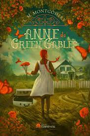

Anne de Green Gables
Quando os irmãos Marilla e Matthew Cuthbert, de Green Gables, na Prince Edward Island, no Canadá, decidem adotar um órfão para ajudá-los nos trabalhos da fazenda, não estão preparados para o “erro” que mudará suas vidas: Anne Shirley, uma menina ruiva de 11 anos, acaba sendo enviada, por engano, pelo orfanato.